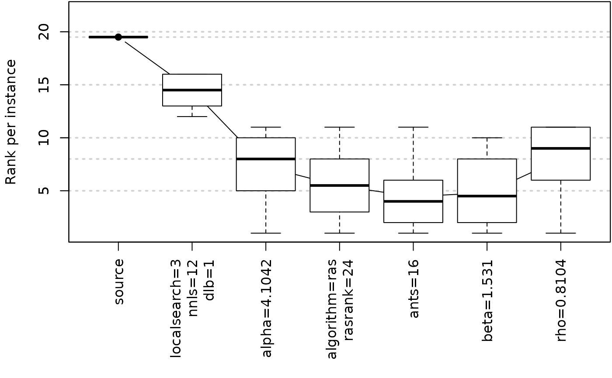
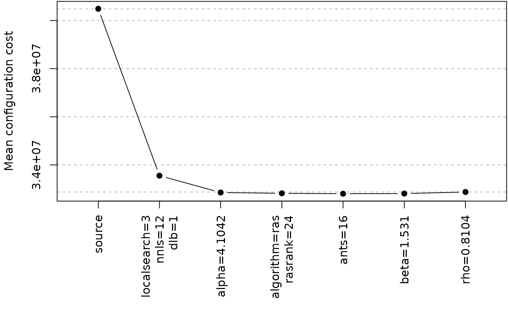
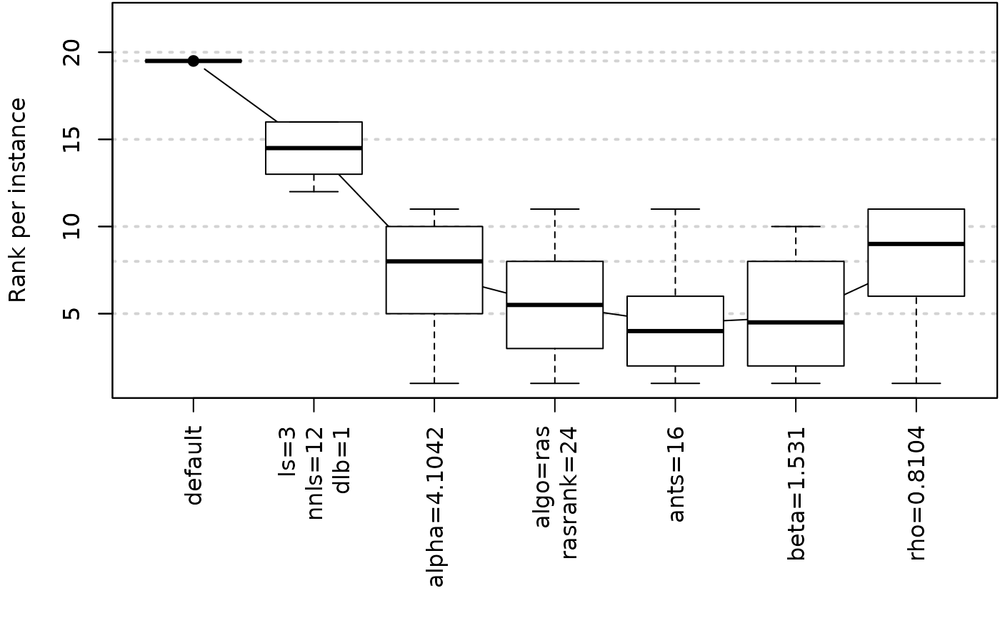

Create plot from an ablation log
Usage
plotAblation(
ablog,
pdf_file = NULL,
width = 20,
height = 7,
type = c("mean", "boxplot", "rank"),
n = 0L,
mar = NULL,
ylab = "Mean configuration cost",
ylim = NULL,
rename_labels = NULL,
...
)Arguments
- ablog
(
list()|character(1)) Ablation log object returned byablation(). Alternatively, the path to an.Rdatafile, e.g.,"log-ablation.Rdata", from which the object will be loaded.- pdf_file
Output filename.
- width
Width provided to create the PDF file.
- height
Height provided to create the PDF file.
- type
Type of plot. Supported values are
"mean"and"boxplot". Adding"rank"will plot rank per instance instead of raw cost value.- n
integer(1)
Number of parameters included in the plot. By default all parameters are included.- mar
Vector with the margins for the ablation plot.
- ylab
Label of y-axis.
- ylim
Numeric vector of length 2 giving the y-axis range.
- rename_labels
character()
Renaming table for nicer labels. For example,c("No value"="NA", "LongParameterName"="LPN").- ...
Further graphical parameters may also be supplied as arguments. See
graphics::plot.default().
Examples
logfile <- file.path(system.file(package="irace"), "exdata", "log-ablation.Rdata")
plotAblation(ablog = logfile)

plotAblation(ablog = logfile, type = "mean")

plotAblation(ablog = logfile, type = c("rank","boxplot"), rename_labels = c(
"localsearch"="ls", algorithm="algo", source="default"))
